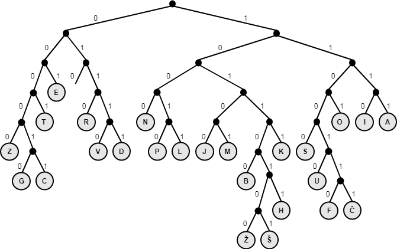

Licenca
To delo je na voljo pod pogoji slovenske licence Creative Commons 2.5:
priznanje avtorstva - nekomercialno - deljenje pod enakimi pogoji.
Celotna licenca je na voljo na spletu na naslovu http://creativecommons.org/licenses/by-nc-sa/2.5/si/. V skladu s to licenco je dovoljeno vsakemu uporabniku delo razmnoževati, distribuirati, javno priobčevati, dajati v najem in tudi predelovati, vendar samo v nekomercialne namene in ob pogoju, da navede avtorja oziroma avtorje in izdajatelja tega dela. Če uporabnik delo predela, kar pomeni, da ga spremeni, preoblikuje, prevede ali uporabi to delo v svojem delu, lahko predelavo dela ponudi na voljo le pod pogoji, ki so enaki pogojem iz te licence oziroma pod enako licenco.

Kodiranje in stiskanje podatkov
Kodiranje podatkov
Da lahko podatke (besedilo, slike, zvok, video) obdelujemo s pomočjo računalnika, jih moramo zapisati v dvojiški obliki. Za zapisovanje besedila najpogosteje uporabljamo tako vrsto kodiranja, pri kateri vsak znak (črke, števke, ločila ali posebni znake) zapišemo z enako dolgim zaporedjem ničel in enic. Načeloma si lahko vsak izmisli svoj vrstni red številčenja znakov – kajti gre za to, da vsakemu znaku dane abecede priredimo številko, ki je zapisana v dvojiškem številskem sistemu. Primer kodiranja si lahko ogledaš na spodnji sliki:

Primer prikazuje 5-bitno kodiranje, kar pomeni, da vsakemu znaku priredimo zaporedje 5 ničel ali enic. Po tem kodiranju priredimo črki A vrednost 00001, črki B vrednost 00010 in tako naprej do črke Ž, ki ji priredimo vrednost 11001.
Običajno pa se držimo standardov. Najbolj znan standard za zapis znakov je ASCII (angl. American Standard Code for Information Interchange), ki za zapis posameznega znaka uporablja 7 bitov (zaporedje sedmih ničel ali enic). Na tak način lahko zapišemo 128 različnih znakov, saj velja, da je 27 = 128. Razširjeni standard ASCII uporablja 8 bitov, kar mogoča zapis 256 različnih znakov. To seveda ne zadostuje za zapis kitajskih, japonskih ali korejskih pismenk. Te pismenke zapisujemo s pomočjo standarda Unicode, ki uporablja 16 bitov, kar omogoča zapis 65.536 različnih znakov.
Stiskanje podatkov
Pri uporabi računalnikov sta zelo pomembna procesorska moč in prostor za shranjevanje. Da lahko oboje kar najbolje izkoristimo, moramo včasih zmanjšati velikost datotek z besedilom, slikami, zvokom ali videom. Tako lahko datoteke hitreje prenašamo, potrebujemo pa tudi manj prostora za njihovo shranjevanje. Velikost datotek zmanjšujemo s stiskanjem. Stisnemo lahko katero koli vrsto podatkov. Poznamo dve glavni vrsti stiskanja: stiskanje z izgubami (angl. lossy compression) in stiskanje brez izgub (angl. lossless compression). Katero vrsto stiskanja bomo izbrali je odvisno od vrste podatkov, ki jih želimo stisniti.
Stiskanje z izgubami pomeni, da se del podatkov (oziroma del ničel in enic) pri postopku stiskanja izgubi. Na primer: pri zvočnem posnetku lahko zanemarimo vse frekvence, ki so višje ali nižje od razpona, ki ga zazna človeško uho. To pomeni, da lahko iz datotek izbrišemo vse podatke, s katerimi so zapisane previsoke ali prenizke frekvence. Tako stisnjena datoteka bo manjša od izvorne datoteke. Stiskanje z izgubami je običajno prilagojeno človeškim čutilom in izbriše podatke, ki jih naša čutila niso sposobna zaznati. Stiskanja z izgubami pa ne moremo uporabljati pri besedilnih datotekah. Če bi pri teh datotekah odstranili določene ničle in enice, bi to povzročilo popolno spremembo izvornega besedila.
Za stiskanje besedilnih podatkov običajno uporabljamo stiskanje brez izgub. To pomeni, da lahko iz stisnjene datoteke podatke brez izgub povrnemo nazaj v izvorno obliko. Besedilne podatke običajno stiskamo s pomočjo Huffmanovega postopka oziroma Huffmanovega kodiranja. Ta postopek deluje tako, da izračuna frekvenco pojavitev znakov v besedilu. Nato znakom, ki se pojavljajo najpogosteje priredi najkrajše zaporedje ničel in enic. Znakom, ki se pojavljajo najmanj pogosto, pa priredi najdaljše zaporedje ničel in enic. Primer prireditev vrednosti posameznim znakom s pomočjo Huffmanovega kodiranja si lahko ogledaš na spodnji sliki:

Primer prikazuje, da črki E, ki se pojavlja najpogosteje, priredimo vrednost 001, črkama Ž in Š, ki se pojavljata najmanj pogosto, pa priredimo vrednosti 10110100 in 10110101.